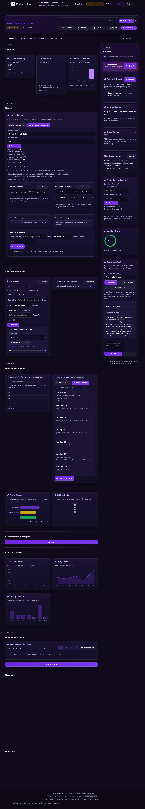

PredictMyGrade
A portfolio-grade academic analytics application combining persisted student data, dashboards, forecasting-style tools, study planning, demo-safe feature gating and browser-level verification.
Evidence: live Render demo · backend regression tests · Playwright browser journeys · GitHub Actions CI · explicit mock-only billing and AI demo flows